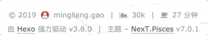
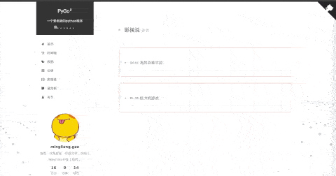
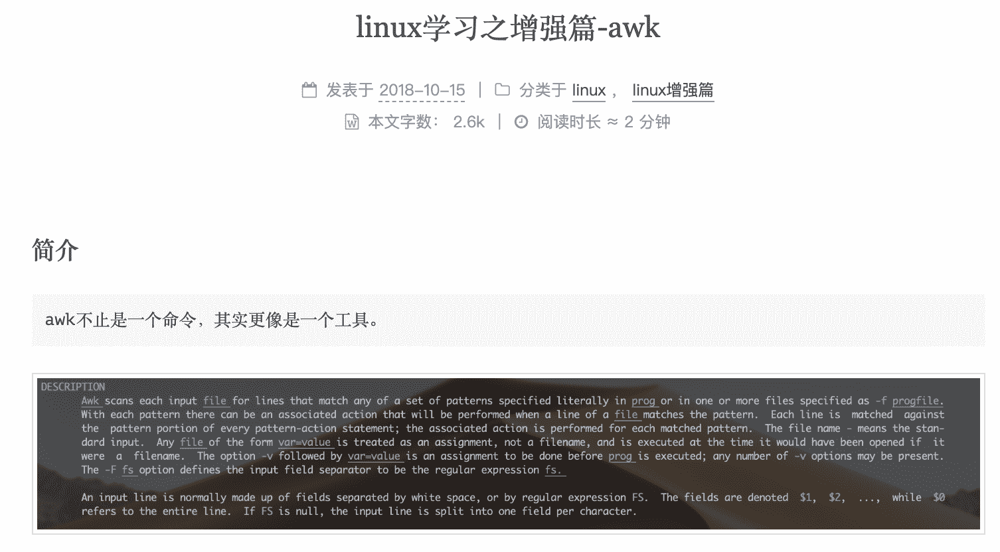
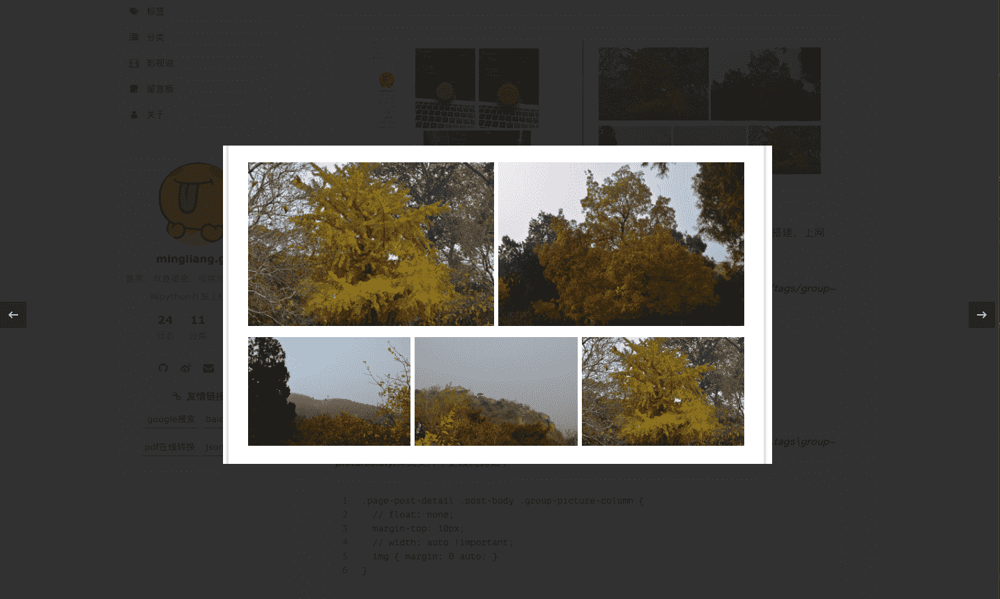

Next主题优化-基础篇（Gemini）
问题简述
My blog 采用Hexo + Next搭建，搭建完之后，看页面居然还是英文，好ugly，身为一名程序猿怎么可以忍呢。在持续一个月的捣鼓中，总结出Next一些通过配置优化的点。
版本信息
| id | name | version | remark |
|---|---|---|---|
| 1 | Hexo | v3.8.0 | 系统版本 |
| 2 | NextT.Pisces | v7.0.1 | 主题版本 |
| 3 | ATOM | 1.34.0 | 编译器 |
| 4 | Theme | Gemini |
优化Catalog
- 切记config文件冒号“：”后面一定要有一个空格
- 修改后重启服务：hexo g && hexo server -p 8888 debug
位置：blog/_config.yml
hexo自带的config.yml，不是next主题的，看好了
1 | |
位置：blog/theme/next/_config.yml
打开配置文件，搜索Schemes，更改配置如下：
1 | |
位置：blog/theme/next/_config.yml
打开文件，格式：Key: Path || Icon，不想要的#禁止掉
1 | |
终端（mac推荐使用zsh + item2）回到blog的根目录，运行：hexo new page about，在blog/source下会自动建立about文件夹，编辑里面的index.md，配置如下：
1 | |
现在可以使用atom去写关于自己的描述了（markdown语法，不知道的请自行恶补）
Tags
根目录运行：hexo new page tags，配置如下：
1 | |
Catalog
根目录运行：hexo new page tags，配置如下：
1 | |
tags和categorise页面不用设置样式，自动生成，之所以与about页面分开，我觉得虽然建立的方式一样，但是内容根本不一个东西，每篇文章设置对应的即可，栗子如下：
1 | |
位置：blog/_config.yml
打开配置文件，搜索post_asset_folder，更改配置如下：
1 | |
开启之后，在创建文章hexo new XXXX，同时也会出现一个同名的文件夹用来存放相关的图片。
设置侧边栏头像，准备好头像图片，可以是png、jpg、gif等，本人用的动态gif图片。然后，将图片放在/blog/themes/next/source/images/文件夹下。
位置：blog/theme/next/_config.yml，搜索avatar，更改配置如下：
1 | |
在Next主题配置文件中，搜索social，设置相对应的社交信息，格式：网站名: 网址 || 图标（英文“:”）。
图标选取地址：自选图标
菜单栏的个人社交信息设置
1 | |
社交信息图标设置
1 | |
位置：blog/scaffolds/post.md
打开上述文件，修改代码如下：
1 | |
- title：文章标题
- desc：文章的简述
- date：文章创建时间
- updated：文章修改时间
- categories：文章分类
- tags：文章标签
- comments：是否启用评论功能，默认关闭
位置：blog/theme/next/_config.yml
打开配置文件，搜索Button，更改配置如下：
1 | |
默认按钮显示复制，若是想改为英文copy，打开blog/themes/next/languages/zh-CN.yml文件中，将下面部分改了即可：
1 | |
位置：blog/theme/next/_config.yml
打开配置文件，搜索reward_settings，更改配置如下：
1 | |
位置：blog/theme/next/_config.yml
打开配置文件，搜索footer，更改配置如下：
1 | |
图标选取地址：https://fontawesome.com/v4.7.0/icons/

位置：blog/theme/next/_config.yml
打开配置文件，搜索busuanzi_count，更改配置如下：
1 | |
位置：blog/theme/next/_config.yml
canvas-nest：https://github.com/theme-next/theme-next-canvas-nest
three_waves：https://github.com/theme-next/theme-next-three
具体步骤github上有详解
打开配置文件，搜索Canvas-nest，更改配置如下：
1 | |
特别指出three_waves配置只能选取一个，而且开启canvas-nest，three_waves之后，页面渲染的时间变长了，而且发现内存，cpu的使用率也加大了，所以我只开启了canvas-nest，根据自己的需求进行配置。

分享插件：baidushare
文章添加新浪、微信、贴吧等国内第三方分享，关于位置有button | slide2种选择。
位置：blog/theme/next/_config.yml
打开配置文件，搜索baidushare，更改配置如下：
1 | |
分享插件：likely
文章添加twitter、facebook、linkedin等国际第三方分享，有需要的同学可以开启此功能。
位置：blog/theme/next/_config.yml
打开配置文件，搜索likely，更改配置如下：
1 | |
分享插件：NeedMoreShare2
配置文件新增了综合国内、国际分享，也是可以设置底部、侧边2种位置。
位置：blog/theme/next/_config.yml
打开配置文件，搜索NeedMoreShare2，更改配置如下：
1 | |
位置：blog/theme/next/_config.yml
站点浏览添加友情链接，格式：名称: url(英文“:”)。打开配置文件，搜索Blog rolls，更改配置如下：
1 | |
首页文章设置预览前言显示，有2种方式，都share一下。
配置
位置：blog/theme/next/_config.yml
打开配置文件，搜索auto_excerpt，更改配置如下：
1 | |
设置完之后，首页预览每个markdown格式，不建议使用。
more
在文章需要进行预览的地方，加入如下代码：
1 | |
建议使用，格式、图片等不受影响。
首页文章设置预览用more去进行处理，当在预览中加入图片时，图片链接会去blog>public>images目录下去寻找对应的图片，打开文章又回去文章对应的目录>images目录下去找。
所以，当文章预览中有图片显示的文章，在文章的目录下手动建立一个images文件夹，把图片分别存放在当前images文件夹以及blog>public>images文件夹下。这样就OK了。

不过有个问题，首页如果分页显示，那么首页预览图片寻找的路径会发生改变。所以我在前面设置文章预览个数index_generator的时候设置为0，这是我的解决方法，如果大家有好的解决方案，欢迎大家留言交流。
首先，下载fancybox插件，有2个版本，我选择了最新版3。
1 | |
位置：blog/theme/next/_config.yml
打开配置文件，搜索fancybox，更改配置如下：
1 | |
fancybox官网：https://github.com/theme-next/theme-next-fancybox3

设置页面的浏览百分比，打开配置文件，搜索scrollpercent，更改配置如下：
位置：blog/theme/next/_config.yml
1 | |
在文章标题下面显示文章相关的额外信息，打开配置文件，搜索post_meta，更改配置如下：
位置：blog/theme/next/_config.yml
1 | |
blog默认情况下访问URL路径为：domain/2017/08/18/title，打开配置文件，搜索permalink，更改配置如下：
位置：blog/_config.yml
1 | |
配置完，重启一下server，回到主页在进行文件查看，发现地址发生改变
修改博客favicon图标，打开配置文件，搜索apple_touch_icon，更改配置如下：
位置：blog/theme/next/_config.yml
1 | |
打开/themes/next/layout/_macro/post.swig，搜索rel=”tag”>#，将#换成下列代码:
1 | |
注意
- 配置完Hexo config需要重启server，next config重新刷新即可。
学习
- hexo官方配置手册：https://hexo-guide.readthedocs.io/zh_CN/latest/index.html
- hexo图标选取地址：https://fontawesome.com/icons
结束
本篇内容主要解决Hexo、Next相关config配置文件的优化，内容持续更新中，如有bugs，欢迎大家评论指出。
待续。。。。。。（未完结）
学会分享，一起进步